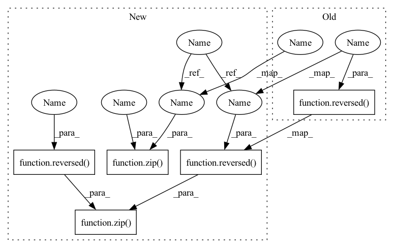

Pattern ID :1769

Before Change
curr_fmap_size = image_size
for ind, (dim_in, dim_out) in enumerate(in_out):
is_last = ind >= (num_resolutions - 1)
self.conditioners.append(conditioning_klass(curr_fmap_size, dim_in))
self.downs.append(nn.ModuleList([
block_klass(dim_in, dim_in, time_emb_dim = time_dim),
block_klass(dim_in, dim_in, time_emb_dim = time_dim),
Residual(LinearAttention(dim_in)),
Downsample(dim_in, dim_out) if not is_last else nn.Conv2d(dim_in, dim_out, 3, padding = 1)
]))
if not is_last:
curr_fmap_size //= 2
// middle blocks
mid_dim = dims[-1]
self.mid_block1 = block_klass(mid_dim, mid_dim, time_emb_dim = time_dim)
self.mid_attn = Residual(Attention(mid_dim))
self.mid_block2 = block_klass(mid_dim, mid_dim, time_emb_dim = time_dim)
// condition encoding path will be the same as the main encoding path
self.cond_downs = copy.deepcopy(self.downs)
self.cond_mid_block1 = copy.deepcopy(self.mid_block1)
// upsampling decoding blocks
self.ups = nn.ModuleList([])
for ind, (dim_in, dim_out) in enumerate(reversed(in_out)):
is_last = ind == (len(in_out) - 1)
skip_connect_dim = dim_in * (2 if self.skip_connect_condition_fmaps else 1)
After Change
self.cond_init_conv = nn.Conv2d(channels, init_dim, 7, padding = 3)
dims = [init_dim, *map(lambda m: dim * m, dim_mults)]
in_out = list(zip(dims[:-1], dims[1:]))
block_klass = partial(ResnetBlock, groups = resnet_block_groups)
// time embeddings
time_dim = dim * 4
self.time_mlp = nn.Sequential(
SinusoidalPosEmb(dim),
nn.Linear(dim, time_dim),
nn.GELU(),
nn.Linear(time_dim, time_dim)
)
// layers
num_resolutions = len(in_out)
assert len(full_self_attn) == num_resolutions
self.conditioners = nn.ModuleList([])
self.skip_connect_condition_fmaps = skip_connect_condition_fmaps
// downsampling encoding blocks
self.downs = nn.ModuleList([])
curr_fmap_size = image_size
for ind, ((dim_in, dim_out), full_attn) in enumerate(zip(in_out, full_self_attn)):
is_last = ind >= (num_resolutions - 1)
attn_klass = Attention if full_attn else LinearAttention
self.conditioners.append(conditioning_klass(curr_fmap_size, dim_in))
self.downs.append(nn.ModuleList([
block_klass(dim_in, dim_in, time_emb_dim = time_dim),
block_klass(dim_in, dim_in, time_emb_dim = time_dim),
Residual(attn_klass(dim_in)),
Downsample(dim_in, dim_out) if not is_last else nn.Conv2d(dim_in, dim_out, 3, padding = 1)
]))
if not is_last:
curr_fmap_size //= 2
// middle blocks
mid_dim = dims[-1]
self.mid_block1 = block_klass(mid_dim, mid_dim, time_emb_dim = time_dim)
self.mid_attn = Residual(Attention(mid_dim))
self.mid_block2 = block_klass(mid_dim, mid_dim, time_emb_dim = time_dim)
// condition encoding path will be the same as the main encoding path
self.cond_downs = copy.deepcopy(self.downs)
self.cond_mid_block1 = copy.deepcopy(self.mid_block1)
// upsampling decoding blocks
self.ups = nn.ModuleList([])
for ind, ((dim_in, dim_out), full_attn) in enumerate(zip(reversed(in_out), reversed(full_self_attn))):
is_last = ind == (len(in_out) - 1)
attn_klass = Attention if full_attn else LinearAttention
In pattern: SUPERPATTERN
Frequency: 3
Non-data size: 5
Instances
Fragment ID: 4373747
Project Name: lucidrains/med-seg-diff-pytorch
Commit Name: efbb6cd8fb9e012d242a872f4862f3e95929709f
Time: 2022-11-30
Author: lucidrains@gmail.com
File Name: med_seg_diff_pytorch/med_seg_diff_pytorch.py
Class Name: Unet
Method Name: __init__
Parent Class: nn.Module
Fragment ID: 4373748
Project Name: lucidrains/denoising-diffusion-pytorch
Commit Name: 54557120880bb9adbea9f93a29a2c432b67991c1
Time: 2023-02-01
Author: lucidrains@gmail.com
File Name: denoising_diffusion_pytorch/simple_diffusion.py
Class Name: UViT
Method Name: __init__
Parent Class: nn.Module
Fragment ID: 4373749
Project Name: lucidrains/x-unet
Commit Name: b3baf3ac77328c1fea7bce83524cbfd3c17cc9f6
Time: 2022-07-25
Author: lucidrains@gmail.com
File Name: x_unet/x_unet.py
Class Name: XUnet
Method Name: __init__
Parent Class: nn.Module